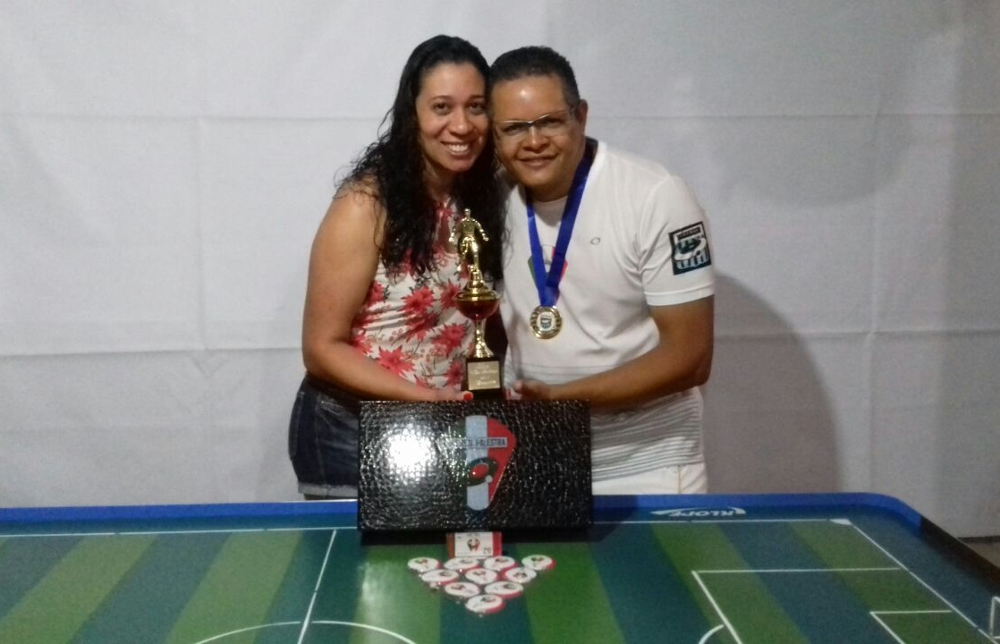

Taça Sociedade Ventura
Na noite do dia 14/10 tivemos a já tradicional Taça Sociedade Ventura. A taça vem ganhando tradição no calendário do Vetor Norte, pois ela sempre conta com grandes jogos e disputas de tirar o folego. Como patronos dessa competição temos as equipes Sociedade Ventura ( Técnico Gleison) e Ventura Jr (Técnico Raul).
A competição foi disputada por oito equipes, divididas em dois grupos, os jogos foram disputados entre times do grupo A contra times do grupo B em turno único. Assim tornando cada jogo uma final, pois a competição não da muita chance de recuperação.
Ao final da fase de grupos, dois times de cada grupo se classificaram para a fase final , sendo o primeiro do grupo A jogando contra o segundo do grupo A e a mesma coisa acontecendo no grupo B. Os confrontos foram em jogo único, onde o time com a melhor a campanha teria a vantagem do empate.
A grande final foi disputada pelo vencedor da semifinal A contra o vencedor da semifinal B, sem vantagem para nenhuma equipe.
Noite histórica na mesa do Vetor Norte
Para coroar a Taça Sociedade Ventura, o Grêmio Recreativo de Futmesa Vetor Norte completou seu milésimo jogo, e a honra de fazê-lo, coube aos anfitriões Sociedade Ventura (Gleison) e Ventura Jr(Raul).
O placar desse jogo historico foi 2x1 a favor do Sociedade Ventura.
1000 Vezes Vetor Norte !!!!
Roteiro de filme "Invictus" e Bicampeonato para o Sapo Guerreiro
Se a história do Real Palestra (Fábio) dentro dessa edição da Taça Sociedade Ventura fosse comparada a um filme, "Invictus" seria esse filme.
A campanha do Sapo Guerreiro começou de forma dramática, com dois tensos empates contra Chapecoense (Rubens) e Gálatas (Leandro), ambos por 0x0. E a coisa parecia que iria ficar ainda pior quando logo no início da terceira partida, o Ventura Jr (Raul) abril 2x0 no placar nos dois primeiros chutes a gol. A situação daquele momento exigia frieza, pois, dali em diante seria tudo ou nada. O alívio veio em um chute certeiro que diminuiu o prejuízo. Após o gol os papéis se inverteram, com o Real Palestra crescendo no jogo e o Ventura Jr não conseguindo mais se impor, então foi questão de tempo para vir o empate e em seguida a virada, Real Palestra 3x2.
O jogo seguinte seria contra a inspirada Sele-Galo (João Paulo - JP) e o Sapo Guerreiro, que mais uma se superou e venceu por 1x0 se classificando em primeiro do grupo.
Chegou às semifinais e o adversário era o já tradicional rival Baleares (considerado o papa títulos do Vetor Norte). O jogo começou e não demorou para o Real Palestra abrir 2x0 no placar, a equipe do Baleares (Rodrigo) não se deu por vencida e veio pra cima. O jogo se manteve aberto até o apito final e o Sapo Guerreiro se credenciou à final após vitória, pelo elástico placar de 6x2.
Novamente Real Palestra e Sele-Galo se cruzam, dessa vez valia o título da Taça Ventura. Em um jogo equilibrado e com o Real Palestra um pouco melhor, o placar ficou em 2x0 e o Sapo Guerreiro se consagrou bicampeão invicto da segunda edição da Taça Sociedade Ventura.
Real Palestra Bicampeão da Taça Sociedade Ventura !!!!
Faltou pouco para o Aurinegro do Vetor Norte
Após um início brilhante, vencendo seus dois primeiros jogos pelo placar de 3x0 contra as equipes da Sociedade Ventura (Gleison) e Cruz Azul (Luciano), o time não conseguiu manter o ritmo e perdeu os outros dois jogos da fase de classificação por 1x0 contra Baleares (Rodrigo) e Real Palestra (Fabio), mesmo assim garantiu vaga nas semifinais da competição.
Na semifinal como de costume enfrentou mais uma pedreira o Gálatas (Leandro) que havia se classificado em primeiro lugar no mesmo grupo da Sele-Galo. Em um jogo aberto, onde as duas equipes procuravam o gol a todo instante, a Sele-Galo chegou a vitória pelo placar de 4x3 de virada e garantiu vaga na grande final.
Estreante em finais a Sele-Galo buscou o gol a todo momento, mas esbarrou no goleiro do Real Palestra e na competência de seu técnico Fabio Henrique. E no final do tempo normal a vitória para consagrar o esquadrão Aurinegro não veio, mas a Sele-Galo ficou com um honroso vice-campeonato, melhor ataque da competição e a expectativa de títulos após sua melhor campanha nas mesas do Vetor Norte.
Gálatas defesa intransponível
Após uma ótima campanha na primeira fase da Taça Sociedade Ventura onde a equipe se classificou em primeiro do seu grupo como uma defesa solida e quase intransponível.
O sonho do título foi interrompido prematuramente pela Sele-Galo (João Paulo - JP) em um jogo emocionante, onde o Gálatas (Leandro) pulou a frente do placar por duas vezes, mas deixou escapar a vitória nos minutos finais, assim adiando o tão sonhado título da Taça Sociedade Ventura pro ano que vem.
Como prêmio de consolação a Pantera ficou com a terceira colocação da competição ao bater o Baleares (Rodrigo) pelo placar de 1x0 e de quebra faturou a medalha de melhor defesa da competição.